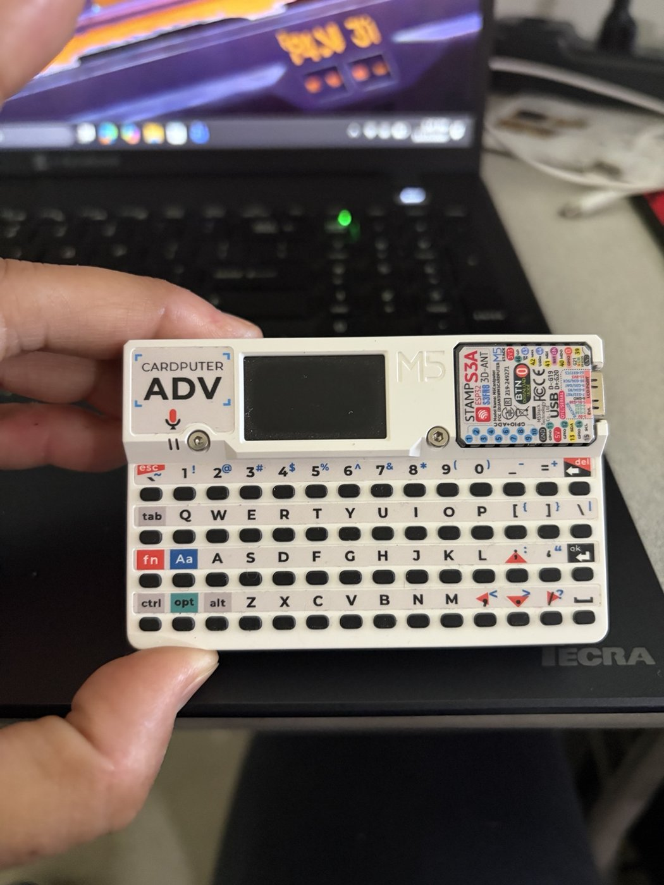
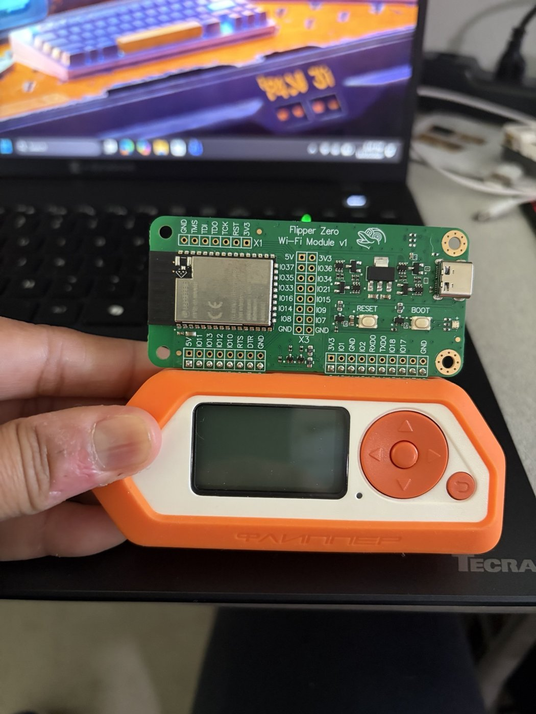
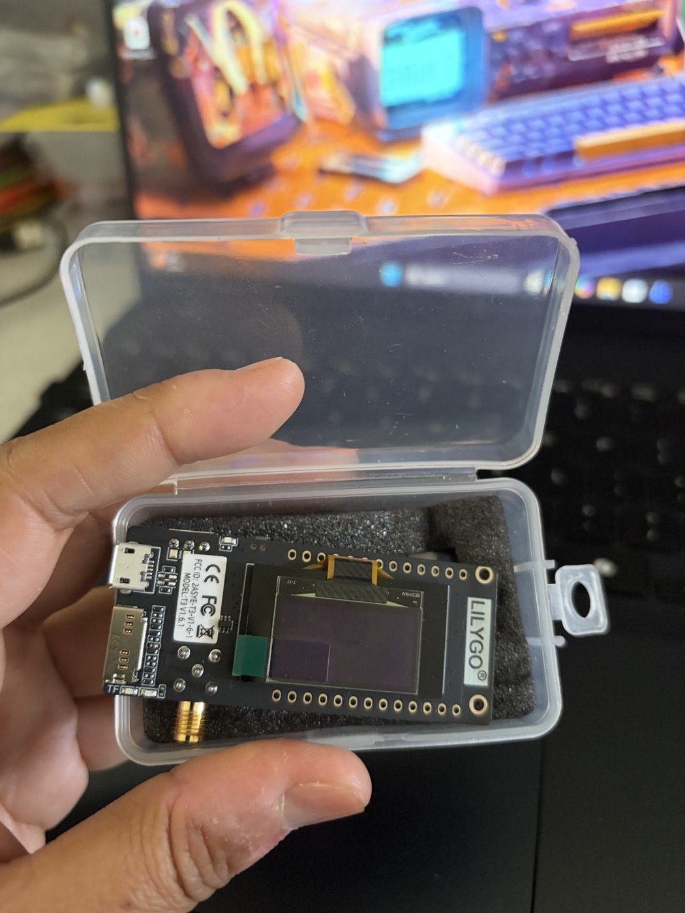
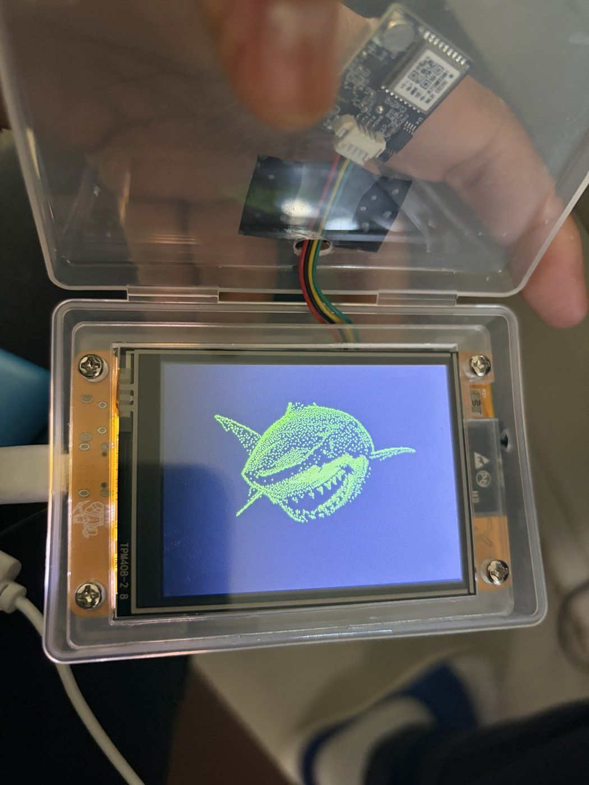
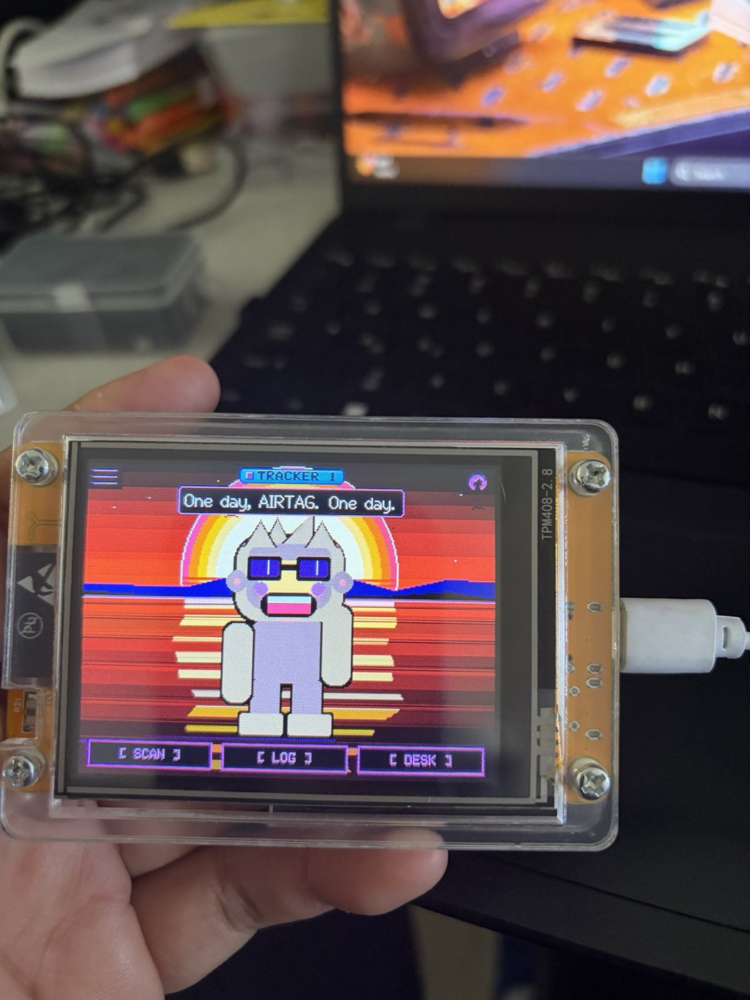
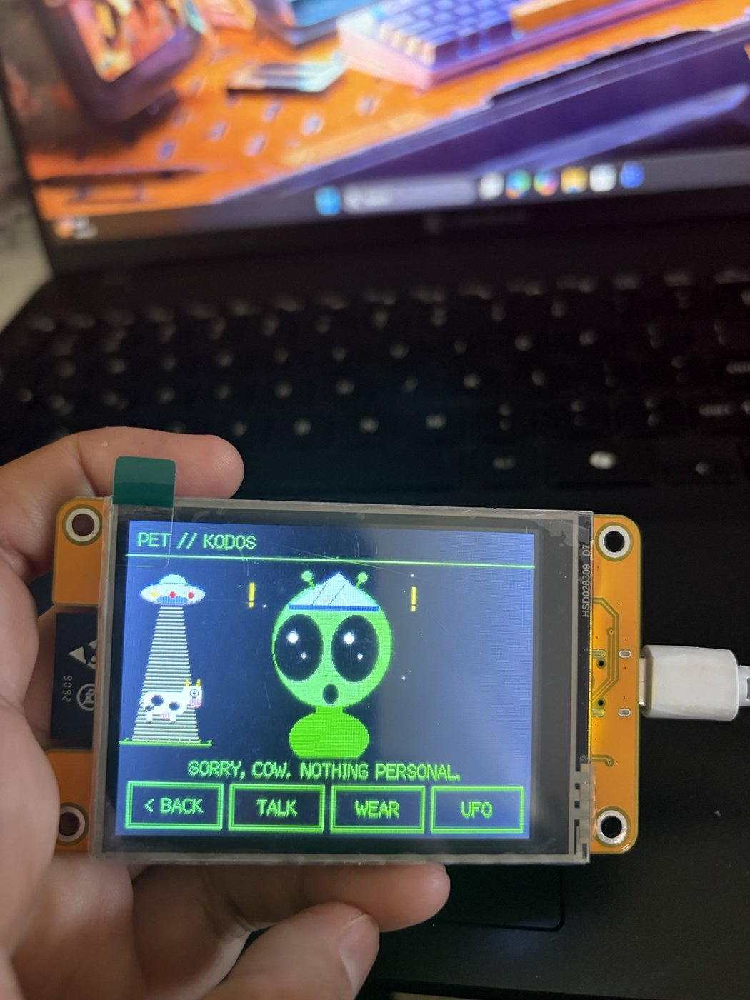
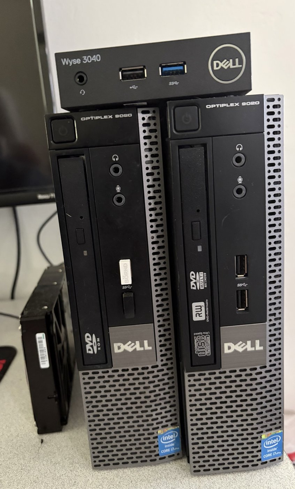
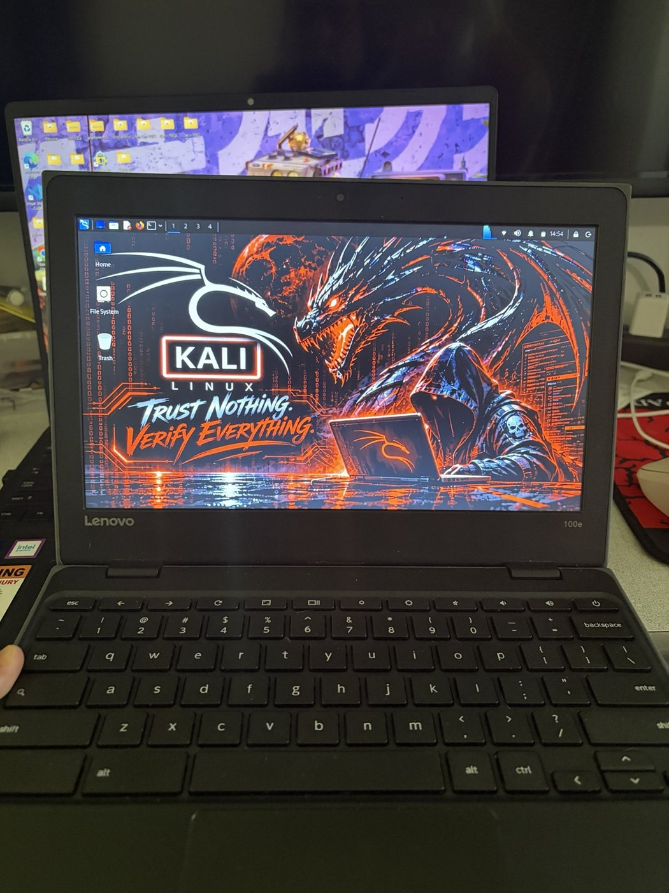

Proxmox virtualization lab
Built and maintain a Proxmox VE hypervisor on a Dell OptiPlex 9020 (Intel i7, 16 GB RAM) for virtualization and networking practice.
Proxmox VE / networking
Jessica Armstrong | Computer science student & aspiring cybersecurity specialist
Retired professional MMA fighter who traded the cage for the command line. I bring discipline, curiosity and a troubleshooting mindset to cybersecurity. I am pursuing an associate degree in Computer Science at Western Technical College while building an independent lab focused on infrastructure, wireless security, Linux and embedded systems.
Built and maintain a Proxmox VE hypervisor on a Dell OptiPlex 9020 (Intel i7, 16 GB RAM) for virtualization and networking practice.
Proxmox VE / networking
Deployed Jellyfin and digitized a 200+ disc library using MakeMKV.
Server deployment / storage
Planning a three-node OptiPlex cluster with a rack and managed switch.
Future expansion
Demonstrated a rogue access point and captive portal using Bruce firmware and ESP32 hardware with test credentials. Used Sasquatch Alert to detect suspicious wireless activity and presented the demonstration to an industry professional.
Wireless security, detection, credential exposure awareness
Built a custom ESP32-C5 touchscreen interface with Arduino IDE, theme switching and status displays. Configured libraries, flashed firmware and debugged touch controls.
Embedded systems, firmware, debugging
Configured Cardputer and ESP32 CYD boards with Bruce firmware; added GPS hardware for wireless and RF security practice.
ESP32 / wireless
Running a 915 MHz LoRa mesh node on a LilyGO T3 board.
LoRa / mesh networking
Developing ESP32 display firmware using PlatformIO and TFT_eSPI.
Firmware development / in progress
Converted a Chromebook into a Kali Linux workstation by disabling firmware write protection, replacing UEFI firmware and installing Linux. Troubleshot networking, audio and storage; configured a system monitoring dashboard.
Linux, UEFI, hardware troubleshooting
Used H2testw to test a purported 1 TB microSD card, documented capacity discrepancies and reported misleading product claims.
Data integrity, evidence documentation
Built a portable cyberdeck from a single-board computer and salvaged LCD panel.
Hardware integration
Create performance-based questions for Network+ and Security+ students to reinforce exam objectives.
Lab design / technical education
Practice web security fundamentals through CTF challenges and TryHackMe.
Continuous learning
Security demonstrations are conducted in authorized lab environments with test credentials. No sensitive network details or real credentials are published.
Actual equipment from my independent learning lab. Select any photograph to view it at full size.

Portable embedded computing and wireless security practice.
ESP32 / portable hardware

Hardware platform for exploring wireless protocols and security in authorized environments.
Hardware / wireless

915 MHz Meshtastic node for LoRa mesh networking experimentation.
LoRa / Meshtastic

ESP32 touchscreen platform used in controlled wireless security demonstrations, with an external module.
Wireless security / ESP32

Wireless threat detection interface used to demonstrate suspicious access point detection.
Detection / wireless

Alien-themed embedded touchscreen interface with interactive controls.
Embedded UI

Two OptiPlex 9020 systems and a Wyse 3040 thin client; hardware for infrastructure and virtualization practice.
Proxmox / infrastructure

Lenovo 100e converted to a Kali Linux workstation through UEFI firmware replacement and Linux installation.
Linux / UEFI
Issued: September 2026
Expires: September 22, 2029
Issued: September 2026
Expires: September 22, 2029
Issued: August 2026
Expires: September 22, 2029
Issued: August 2026
Expires: September 22, 2029
Issued: May 2026
Expires: September 22, 2029
Fiber Optic Association (FOA)
Exam passed: November 18, 2026
Score: 97/100 (97%)
Official credential issuance not yet confirmed.
View CompTIA digital credentials on Credly
Continuing practical training through TryHackMe.
Explore my professional background and credentials.